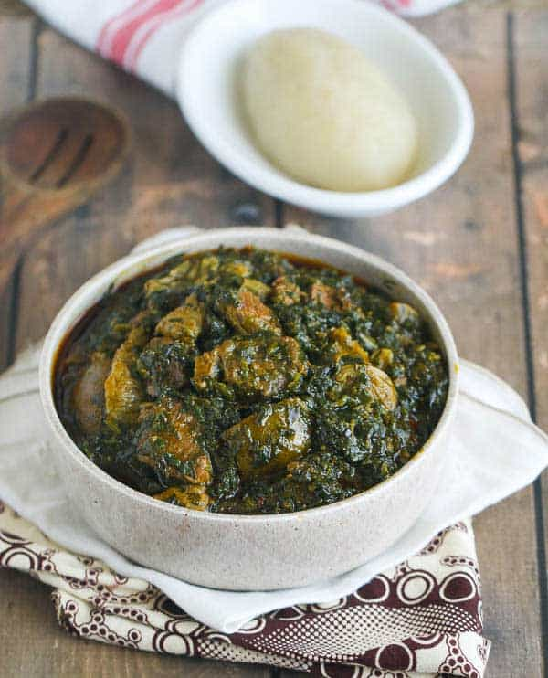

Eru Recipe

ERU is a soup from Cameroon.Eru has carotenoids which are well-known for their antioxidant effects in the body. Antioxidants help protect against cell damage, in so doing it protects against cancer, early aging and is good for heart health. Carotenoids have also been said to be good for male reproductive health. It is a vegetable soup made up of finely shredded leaves of the Eru
Ingredients
- 500g of smoked fish
- 500g of beef
- 750g of spinach
- 500g beef skin in pieces
- 100g of dried Okok or Eru leaves
- 30g crayfish - small dried shrimps crayfish
- 500ml red palm oil
- 2 pinches powder
Preparation
- Wash and cut all your vegetables (Eru)
- Boil it for 30 minutes then add the beef (after you have cleaned it). Remember to ad salt to it.
- Add the vegetables into the pot and leave it to boil for 10 minutes. Add hot pepper (optional).
- Add the soaked fish. You have to keep the juice, it will be useful for the rest of the cooking. Leave it to boil for another 10 minutes while stirring occasionally.
- Add the pan juices and palm oi;, stir and simmer for 15 minutes.
- Finally add crayfish and simmer it for 10 to 15 minutes. Now you are good to go.
<<< ©My The Odin Project Assignment>>>